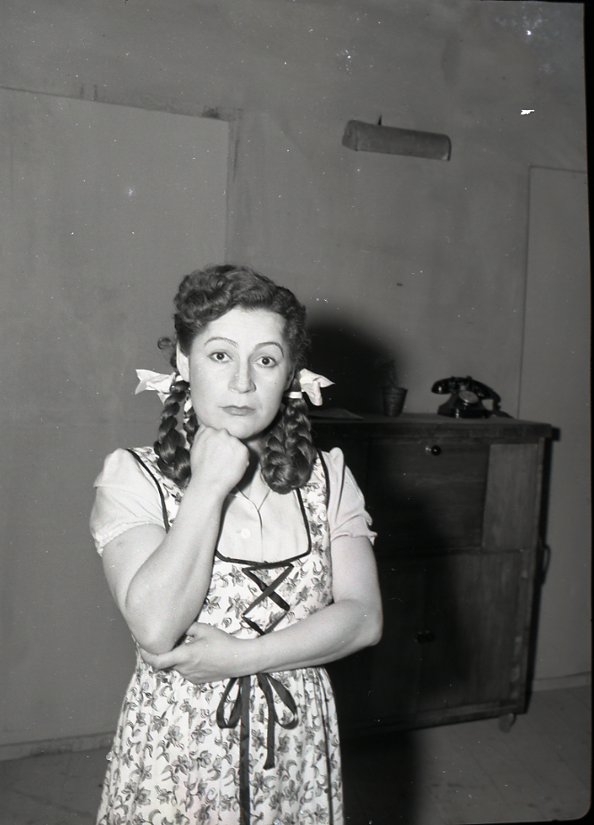
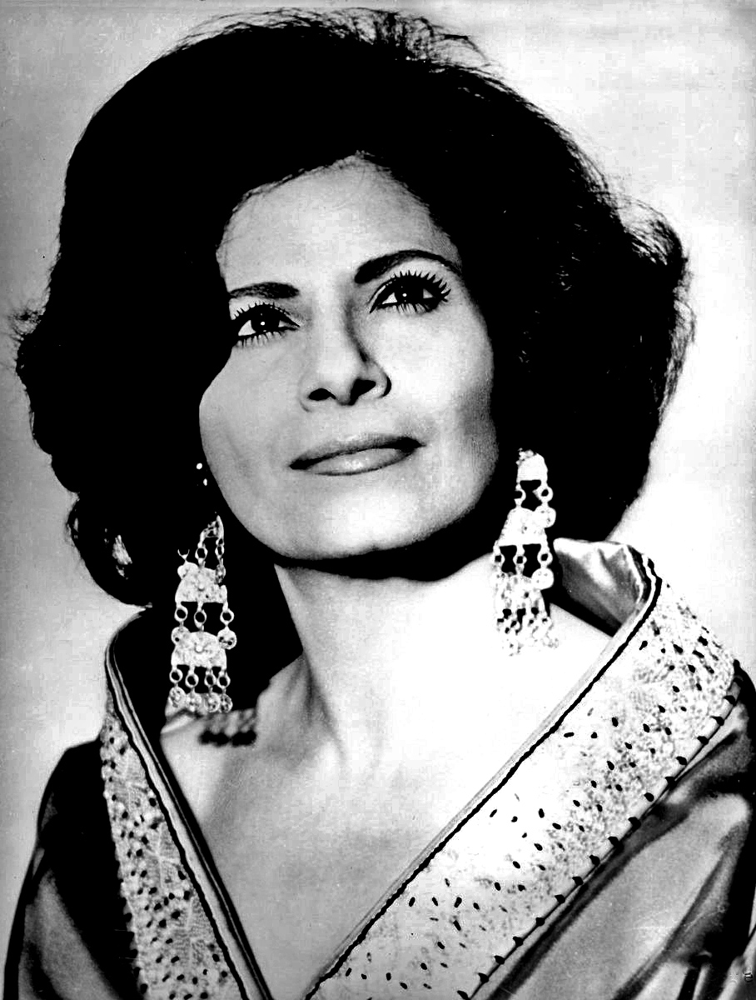
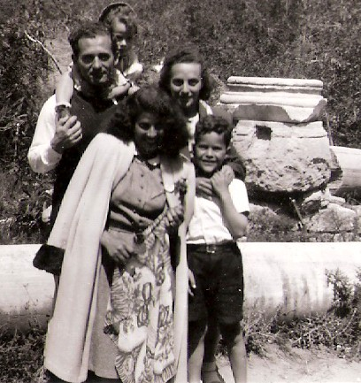
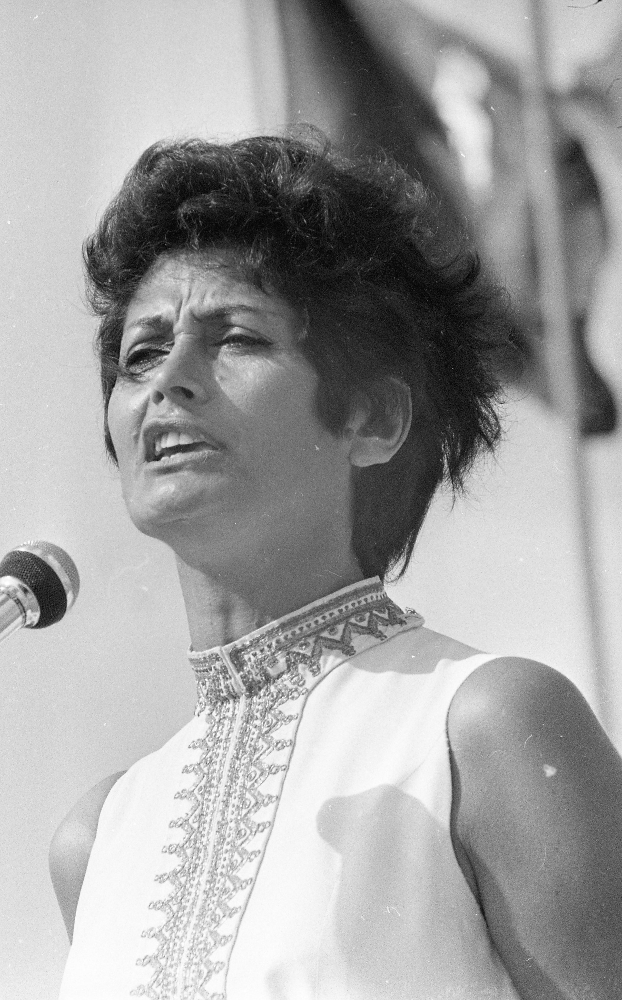
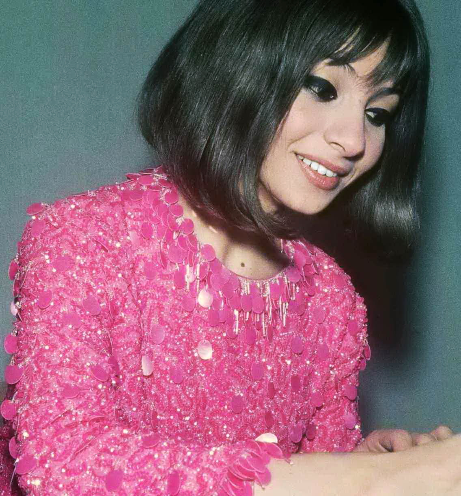
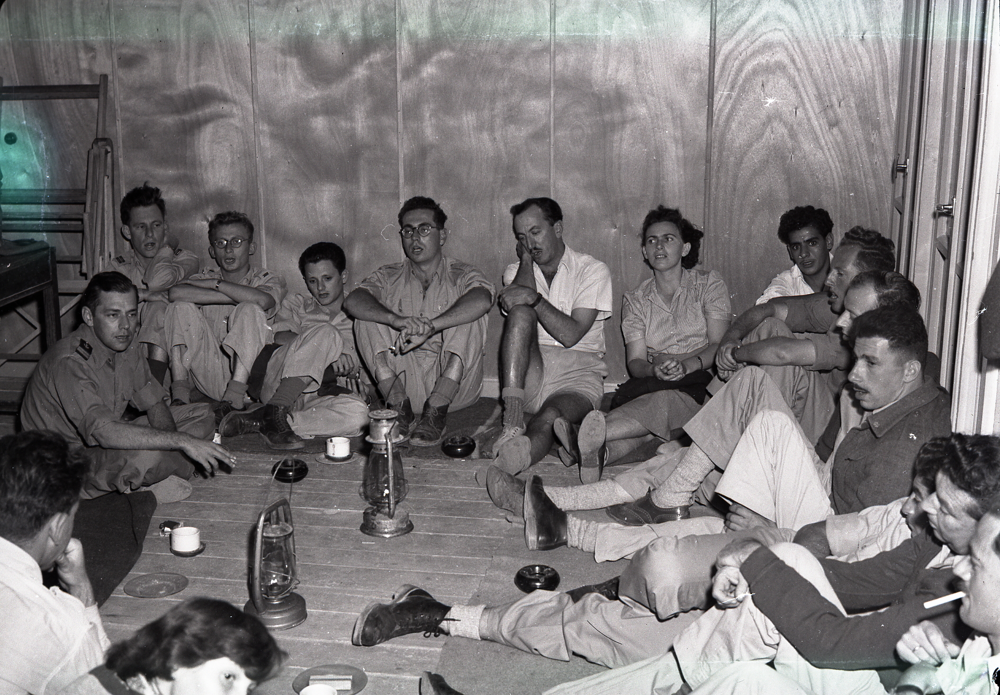
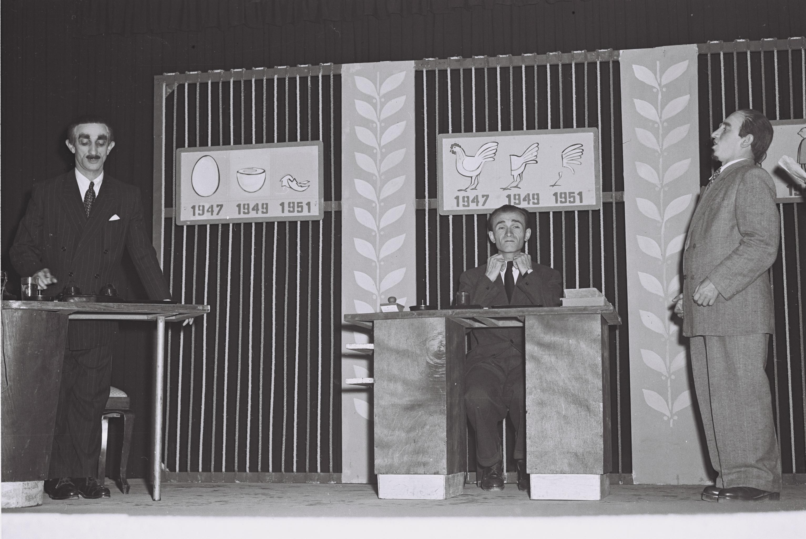
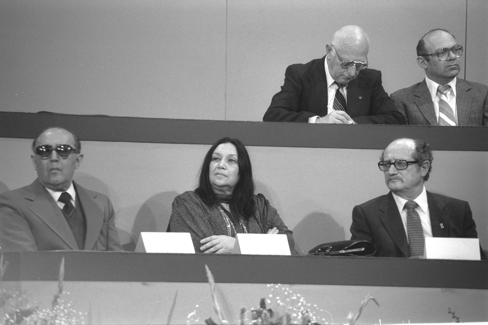

נולד ב־17 באפריל 1910 בוורשה, אז עיר במחוז של הקיסרות הרוסית. במלחמת העולם הראשונה ברחה המשפחה לרוסיה, וחזרה לוורשה ב־1917.
בגיל 13 הצטרף ל"השומר הצעיר". ב־1928 סיים את בית הספר התיכון, וב־1932 — בהמלצת מורה למוזיקה — סיים את לימודי הקומפוזיציה והניצוח בקונסרבטוריון הממלכתי של ורשה.
באותה שנה עלה ארצה. בן 22, פסנתרן עם ראש פולני, צרור תווים בכיס, ושום מושג שעוד יומצא מחדש כ"אבי הפזמון התימני".
תוך זמן קצר מהגעתו ארצה, החל לעבוד כפסנתרן ומלחין בתיאטרון הסאטירי "המטאטא". שם פגש את נתן אלתרמן ויעקב אורלנד. השלושה הפיקו את האווירה המוזיקלית של תל אביב הצעירה.
השירים הראשונים: "גדליה רבע איש", "הטנדר נוסע", "אלימלך". הומור, ביקורת, ריקוד — אבל כבר אז עם הנגיעות המזרחיות שיהפכו לסימן ההיכר שלו.
ביוני 1939 התחתן עם השחקנית ברטה יקימובסקה. הם נשארו יחד 58 שנים, עד מותו. ילדים — לא היו.

ב־1944 נפתח תיאטרון "לי לה לו" ולוילנסקי הוצע התפקיד של מלחין הבית. שם פגש זמרת תימנייה צעירה בת 20 בשם שושנה דמארי. הוא הקשיב לקול שלה והבין שזה לא קול — זה כלי נשק.
הוא ישב והלחין במיוחד בשבילה את "כלניות". השיר התפוצץ. ברגע אחד דמארי הפכה ל"מלכה" וּוילנסקי, הפולני, הפך לאדריכל הצליל המזרחי של המדינה שעוד לא קמה.
דמארי הייתה בת 17 כשהתחתנה עם המפיק שלה, שלמה בשמי. הוא גילה אותה, ניהל אותה — והוא, על פי כל העדויות, ידע בדיוק לְמה הוא מסתבך כשהיא ווילנסקי התחילו לעבוד יחד.

הנה הבדיחה הגדולה של הביוגרפיה: וילנסקי לא ראה כרם תימני בחייו. הוא גדל בוורשה. שמע מוזיקה קלאסית אירופית, שואלל קברטים פולניים, ז'אנרים סלאביים. תימן? — באטלס.
ובכל זאת — או דווקא בגלל זה — הוא הצליח לכתוב את הצליל "התימני" המוכר ביותר של הזמר העברי. אלתרמן כתב את המילים, וילנסקי כתב לחן שנשמע כאילו הולחן בצנעא, דמארי שרה — והעולם השתכנע.
זו לא הייתה אקזוטיקה. זו הייתה הדבקה תרבותית. וילנסקי קלט במה הוא נמצא, פירק את הצליל המזרחי לאלמנטים בסיסיים, והרכיב אותו מחדש בעיבוד תזמורתי אירופי.
תל אביב, אמצע שנות ה־30. תיאטרון "המטאטא" הוא מקום הבילוי של האינטליגנציה. אלתרמן כותב סאטירה צוחקת על דמויות מהיישוב, וילנסקי שם תווים.
"גדליה רבע איש" — דיוקן של טיפוס תל אביבי קטן ועלוב, שמתפעל עצמו לדמות גדולה. השיר היה להיט בזכות הטעימה התימנית שוילנסקי הכניס פנימה — עוד לפני שכל ה"דמארי סאונד" נולד.
"המטאטא" סגר את שעריו ב־1954, אבל בזיכרון הקולקטיבי הישראלי הוא נשאר כמקור של ההומור היהודי־ישראלי המודרני. וילנסקי היה שם מההתחלה.
בזמן מלחמת העצמאות, וילנסקי ודמארי טיילו יחד מפיהם של חיילים — מבסיס לבסיס, מחזית לחזית. הם הופיעו בחיזבטרון, להקת הזמר של הפלמ"ח, ושירים שלו הפכו לסאונד של אותם לילות.
השיר "התזכור?" נכתב מאוחר יותר, אבל הוא תפס את הטון של תקופת הזיכרון של אותו דור — מי שהיה שם, מי שהיה צעיר ב־1948, מי שאיבד חברים.
וילנסקי לא היה בקרבות. הוא היה הקול שעטף את הזיכרון שלהם, גם זה שלא היה לו.

אוקטובר 1956. מבצע סיני. מדינת ישראל בת שמונה שנים, וילנסקי בן 46, דמארי בת 33. השיר "מול הר סיני" נכתב ברגע ההיסטורי הזה — לחן ששואב מהמסורת המזרחית, מילים שמדברות על הר סיני, חיבור של רגע נצחי ורגע פוליטי.
זה היה אופייני: הילד מוורשה, שגדל על שופן וגרשווין, כתב את פסקול המלחמות הישראליות. לא מתוך אידיאולוגיה — מתוך הקשבה לְמה שהשפה הצליל הישראלית רוצה להיות.
וילנסקי לא היה איש של דיווה אחת. במקביל לדמארי, הוא הלחין גם ליפה ירקוני — "זמרת המלחמות" של ישראל, האישה השנייה שמלאה את אולמות המדינה הצעירה.
הסיפור הפיקנטי: דמארי וירקוני שנאו זו את זו. שנים של יריבות מקצועית, אגו, ועלבונות. וילנסקי, איכשהו, הצליח להישאר ידיד טוב של שתיהן. הוא כתב לכל אחת בנפרד, הקפיד לא לערבב — ושמר על הדיפלומטיה כאילו הוא מנהל קואליציה.
כשירקוני שרה את "כשהיינו ילדים", היא לקחה את הלחן הזה למקום אחר משדמארי הייתה לוקחת אותו. ושני המקומות נהיו קלאסיקה.

1962. וילנסקי, בן 52, חוזר לפולין שממנה ברח שלושים שנה קודם. הוא מגיע לפסטיבל סופוט הבינלאומי — אחד מאירועי הפזמון הגדולים של אירופה — עם השיר "סתיו", בביצוע אסתר עופרים הצעירה.
הם זוכים במקום הראשון. הילד היהודי מהקונסרבטוריון של ורשה, שעלה ארצה ב־1932 כי לא היה לו עתיד שם, חוזר ב־1962 כמלחין מנצח, מנופף בפרס הראשון של פולין.
סגירת מעגל. מתוקה, ומריבת חשבון שקטה עם ההיסטוריה.

הם הכחישו את זה כל החיים. כל המקורבים גם הכחישו. אבל בעולם הקטן של תל אביב של פעם, כולם ידעו: וילנסקי ודמארי היו זוג. שנים. גם אחרי שהוא היה נשוי לברטה, גם אחרי שהיא הייתה נשואה לשלמה בשמי.
בשמי, בעלה של דמארי, כתב ביומנו מכתב פרידה חריף: "אני מודיע לך על פרידה ועל זה שלא אראה אותך יותר." הוא קיפל את המכתב, החזיר אותו ליומן, ולא שלח. הם נשארו נשואים עד מותו ב־1988.
הוכחה לא נשארה. רק עיתונאים שלחשו, קולגות שראו, ובן הדור הצעיר שלימים יצפה בסרט "המלכה שושנה" מ־2007 ויבין שמה שהיה בין השניים האלה כתוב בכל לחן שהוא כתב בשבילה.
ב־1961 וילנסקי קיבל את התפקיד הרשמי הגדול של חייו: ראש המחלקה למוזיקה קלה בקול ישראל, ומנצח על תזמורת הבידור. שבע־עשרה שנה הוא ניהל את הצליל של רדיו ישראל.
זמרים צעירים קיבלו דרכו את ההזדמנות הראשונה שלהם. הוא היה נדיב, אבל גם חד לשון. סיפור מהאולפן: זמרת בזבזה שעות יקרות בשאלות. וילנסקי בלי להניד עפעף שאל אותה — "יש לך את הטלפון של עדנה גורן?" (עדנה גורן הייתה זמרת מקצועית מהירה ומבוקשת.) הזמרת עזבה את האולפן.
השיר "מגדלור", על מילים של דן אלמגור, נולד מהשנים האלה. ביצוע של דמארי, כמובן.

לצד הלחנים הרציניים והפטריוטיים, יש לוילנסקי שכבה שלמה של שירים קלילים, שובבים, אירוניים. תל אביב של ימי שישי בערב, פלאפל בדיזנגוף, רומנים שנגמרו רע, נשים שכבר ראו דברים.
פעם, חבר ישב איתו והקשיב לאלבום "Revolver" של הביטלס. וילנסקי, בגיל 56, התרגש כמו ילד. כשהחבר הציע שהיצירה של פול מקרטני יכולה להיות שלו, וילנסקי ענה ביבשות: "הלוואי." צניעות אמיתית, ממישהו שכתב יותר מ־1,000 לחנים.
"כבר מאוחר מדי" — אלתרמן כותב פיכחון, וילנסקי שם לזה לחן של חיוך מר.

גם אחרי שהרומן (לכאורה) הסתיים, השותפות המוזיקלית של דמארי ווילנסקי לא הסתיימה. היא המשיכה לשיר את הלחנים שלו עד שנותיו האחרונות. הם הקליטו, עלו במופעים, התראיינו יחד.
השנים הללו היו פחות סוערות. שני אנשים שעברו יחד את כל הקילומטרים — מ"לי לה לו" של 1944, דרך החיזבטרון, מלחמת סיני, פסטיבל סופוט — והגיעו לְמין שלום אישי שקט.
היא קראה לו "משה שלי". הוא חייך וכתב לה עוד שיר.
בערוב ימיו לקה וילנסקי בשבץ. הידיים שכתבו אלפי לחנים לא יכלו עוד לנגן בפסנתר. הכלי שעמו דיבר עם העולם — נשתק.
אבל הוא לא הפסיק להלחין. את הלחנים החדשים הוא היה מזמזם, רושם בכתב מתקלקל, מבקש ממישהו אחר לנגן לו אותם בפסנתר. הוא היה צריך לשמוע איך זה נשמע כשמישהו אחר עושה את מה שהוא לא יכול לעשות יותר.
ב־2 בינואר 1997, בגיל 86, הוא נפטר בתל אביב. נטמן בבית הקברות קריית שאול.

הילד מוורשה שכתב את הלחן של ישראל.
| ← / ↓ | שקופית הבאה |
| → / ↑ | שקופית קודמת |
| Space | נגן / השהה את השיר |
| R | נגן מההתחלה |
| F | מסך מלא |
| Home / End | שקופית ראשונה / אחרונה |
| ? | פתח/סגור עזרה |